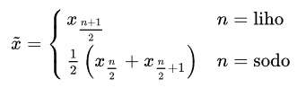

Mediána je srednja vrednost množice števil, ki razdeli števila, razvrščena po velikosti, na dve enaki polovici po številu elementov. Prednost mediane pred aritmetično sredino je ta, da osamelci (podatki, ki ekstremno odstopajo od ostalih podatkov) manj vplivajo na njeno vrednost. Mediana x̃ nabora števil, razvrščenega po velikosti (x1, x2,...,xn) z n členi se izračuna po enačbi:

1. 60
2. 77
3. 107
4. 108
5. 112
6. 114
7. 120
8. 155
9. 200
10. 219
V primeru je 10 naključnih števil, ki jih je potrebno za pridobitev mediane razvrstiti po velikosti, kajti mediana je število na sredini po velikosti razvrščenih števil. Če imamo liho število števil v naboru, je mediana število na sredini nabora. Če pa imamo sodo število števil kot v tem primeru, dobimo mediano tako, da izračunamo aritmetično sredino obeh števil na sredini, to sta v našem primeru 5. in 6. število - rezultat je povprečje obeh, torej v tem primeru 113.
XOR (izključno ali) vrednost predstavlja rezultat operacije, kjer je rezultat 1, če sta dva bita pri dveh številih različna (eden je 0, drugi je 1), in 0, če sta bita enaka. Ta logična operacija se izkaže za ključno v kriptografiji, saj omogoča ustvarjanje varnih kodirnih sistemov. Sposobnost XOR-a, da identificira razlike med biti, se izkorišča za zaščito podatkov pred nepooblaščenim dostopom, pri ustvarjanju digitalnih podpisov ter pri oblikovanju varnih komunikacijskih kanalov.